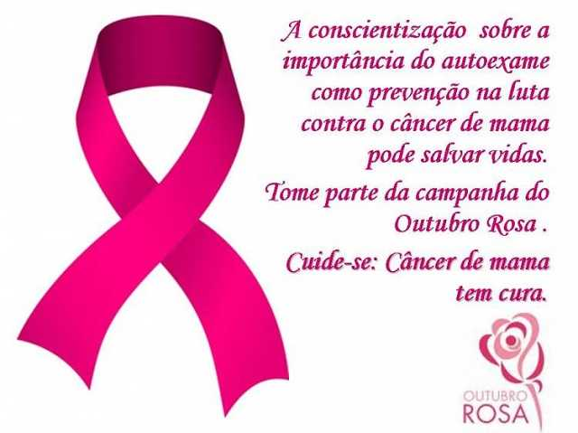

O Outubro Rosa é uma campanha de conscientização que ocorre todos os anos, visando alertar a população sobre a importância da prevenção e do diagnóstico precoce do câncer de mama. Essa iniciativa surgiu nos Estados Unidos na década de 1990 e rapidamente se espalhou pelo mundo. Durante este mês, monumentos e prédios são iluminados em rosa, simbolizando a luta contra a doença e incentivando a realização de exames regulares, como a mamografia.
Câncer de mama
O câncer de mama é o tipo de câncer que mais acomete as mulheres no Brasil. A prevenção primária e a detecção precoce contribuem para a redução da incidência e da mortalidade por essa neoplasia. A população deve ser informada quanto ao tema para que possa adotar medidas que protejam a sua saúde.
A prevenção primária do câncer de mama consiste em reduzir os fatores de risco modificáveis e promover os fatores de proteção para a doença. A prática de atividade física, a manutenção do peso corporal adequado, por meio de uma alimentação saudável, e evitar o consumo de bebidas alcóolicas estão associadas à redução do risco de desenvolver câncer de mama. A amamentação também é considerada um fator protetor.
O diagnóstico precoce consiste na abordagem oportuna das mulheres com sinais e sintomas suspeitos de câncer para identificação da doença em fase inicial, a fim de possibilitar tratamento efetivo e maior sobrevida. É importante informar as mulheres e os profissionais de saúde sobre o reconhecimento dos sinais e sintomas do câncer de mama, bem como organizar a rede de atenção à saúde para garantir o acesso rápido e facilitado ao diagnóstico e tratamento da doença. A orientação é que a mulher observe e apalpe suas mamas sempre que se sentir confortável para tal (seja no banho, no momento da troca de roupa ou em outra situação do cotidiano), sem técnica específica, valorizando-se a descoberta casual de pequenas alterações mamárias.
A segunda estratégia de detecção precoce do câncer de mama é o rastreamento mamográfico. Além de estar atenta ao próprio corpo, é recomendado que mulheres de 50 a 69 anos, de risco padrão, façam uma mamografia de rastreamento a cada dois anos. Esse exame pode ajudar a identificar o câncer antes de a pessoa ter sintomas. A mamografia nesta faixa etária, com periodicidade bienal, é a rotina adotada na maioria dos países que implantaram o rastreamento organizado do câncer de mama e baseia-se na evidência científica do benefício desta estratégia na redução da mortalidade neste grupo.
Para mulheres com risco elevado de câncer de mama, recomenda-se que tenham acompanhamento médico individualizado, pois não há ainda uma recomendação específica para esse grupo.
É importante que as mulheres estejam sempre atentas aos sinais e sintomas suspeitos do câncer de mama:
caroço (nódulo), geralmente endurecido, fixo e indolor;
pele da mama avermelhada ou parecida com casca de laranja, alterações no bico do peito (mamilo) e saída espontânea de líquido de um dos mamilos.
também podem aparecer pequenos nódulos no pescoço ou na região embaixo dos braços (axilas).
Câncer do colo do útero
O câncer do colo do útero é a terceira neoplasia mais frequente em mulheres no Brasil, com grandes desigualdades regionais e maior incidência e mortalidade nas Regiões menos desenvolvidas do País, em especial a Região Norte. Está em curso uma chamada global para a eliminação da doença por ser praticamente 100% prevenível por vacina e rastreamento.
O câncer do colo do útero está associado à infecção persistente por subtipos oncogênicos do vírus HPV (Papilomavírus Humano), especialmente o HPV-16 e o HPV-18, responsáveis por cerca de 70% dos cânceres cervicais. A infecção pelo HPV é muito comum. Estima-se que cerca de 80% das mulheres sexualmente ativas irão adquiri-la ao longo de suas vidas. A maior parte dos casos regride espontaneamente. Quando isso não ocorre, pode ocorrer o desenvolvimento de lesões precursoras que, se identificadas e tratadas adequadamente, possibilita prevenir a progressão para câncer.
A principal forma de prevenção é a vacinação contra o HPV, que protege contra os subtipos oncogênicos 6, 11, 16 e 18. Os dois primeiros causam verrugas genitais e os dois últimos são responsáveis por cerca de 70% dos casos de câncer do colo do útero.
A recomendação atual é de dose única para meninas e meninos com idade entre 9 e 14 anos, pois esta vacina é mais eficaz se usada antes do início da vida sexual.
A vacina também está disponível no SUS para pessoas de 9 a 45 anos vivendo com HIV/Aids, transplantados e pacientes oncológicos, que apresentam maior risco de desenvolver câncer e complicações relacionadas ao HPV. Também estão incluídas as pessoas, nessa faixa etária ampliada, que foram vítimas de violência sexual, devido ao risco aumentado de desfechos negativos relacionados ao HPV, e também as portadoras de papilomatose respiratória recorrente (PPR).
A detecção precoce do câncer do colo do útero é feita atualmente pelo exame citopatológico do colo do útero, na faixa etária de 25 a 64 anos, a cada três anos.
